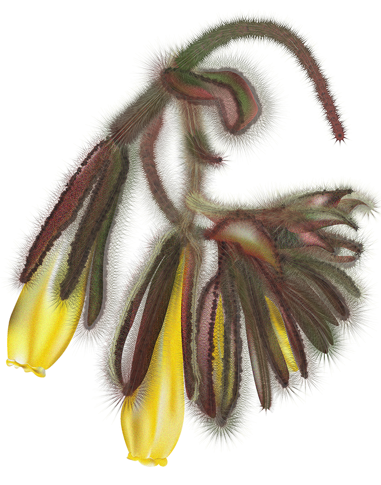
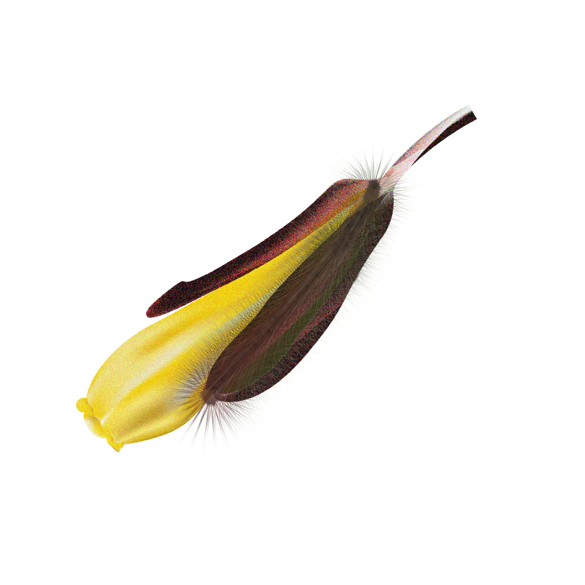

Endemic & Endangered Flora
of Pendataktylos Mountains
Brassica Hilarionis
Delphinium Caseyi
Onosma Caespitosa
Salvia Veneris
Sideritis Cypria
Silenopis Antiphonitis
Teucrium Kyreniae
Delphinium caseyi B.L. Burtt
D. fissum Waldst.
& Kit. subsp. caseyi (B.L. Burtt) C. Blanché & J. Molero
BORAGINACEAE
Summary: Loosely tufted, subshruby perennial, 10-30 m high; twigs covered with simple, rigid hairs. Leaves not rosulate. Corolla bright yellow turning orange-brown with age, narrowly cylindrical; anthers included. Endemic to Cyprus. The plant was found at 5 locations during the present work, in small subpopulations on the Pentadaktylos Range (900 plants): Agios Ilarion, above Lapithos, Chalevga, Larnakas Lapithou and south of Agios Ambrosios; in clefts of limestone rocks (6), at altitude 300-900 m. Most probably it occurs at 2-3 additional locations, where it was collected in the past (pre-1974 collections), which are presently inaccessible. The fact remains, however, that its subpopulations are small and the plant is rare. All known subpopulations occur in an area selected to be proposed as a Natura 2000 site; the site has not been proposed yet however, due to the Turkish occupation. Four locations are in state forest land, at inaccessible sites which afford some degree of protection. Threatened by military activities (10.6), fires (1.7) and overcollection (3.5). [VU: D1+2]

IUCN: Vulnerable
